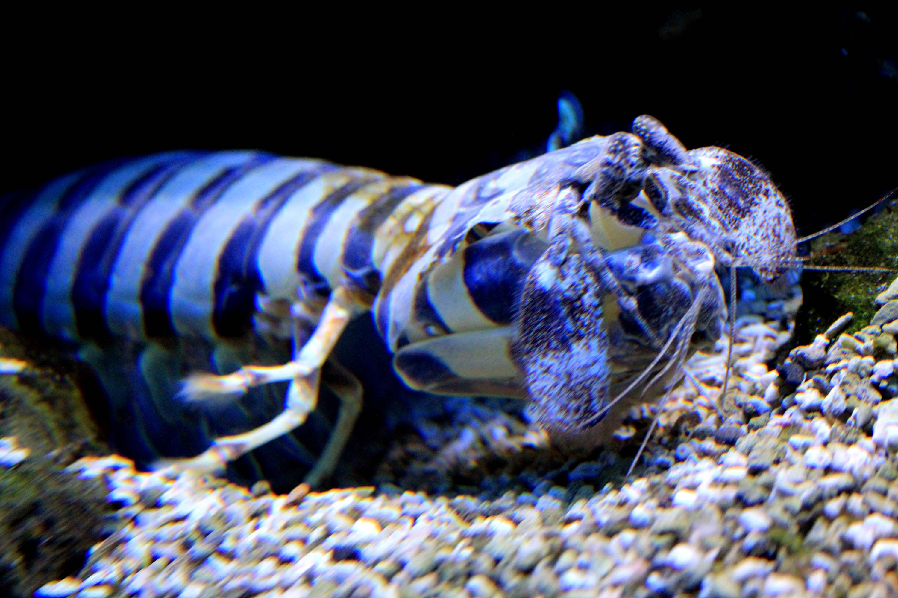

Mantis Shrimp
Lysiosquillina maculata, the zebra mantis shrimp, striped mantis shrimp or razor mantis, is a species of mantis shrimp found across the Indo-Pacific region from East Africa to the Galápagos and Hawaiian Islands.[2] At a length up to 40 cm, L. maculata is the largest mantis shrimp in the world.[2] L. maculata may be distinguished from its congener L. sulcata by the greater number of teeth on the last segment of its raptorial claw, and by the colouration of the uropodal endopod, the distal half of which is dark in L. maculata but not in L. sulcata.[3] A small artisanal fishery exists for this species.[3]

Hunting Strategies
Stomatopods are distinguished by their unique hunting adaptations, the most obvious being their second maxilliped modified into a powerful raptorial claw. Whether a mantis shrimp is classified as a smasher or a spearer is distinguished based on the form of the raptorial claw and the way in which the mantis shrimp uses it. Spearers have unfolded dactyls that are lined with sharp spines and are especially elongated to reach prey. Smashers on the other hand have folded dactyls that are modified for smashing through their heavily calcified shell.[4] The zebra mantis shrimp is an example of a "spearing" mantis shrimp.[5]
Predation
In Prague sea aquarium
By hiding in sandy burrows, Lysiosquillina maculata strike soft-bodied evasive prey that swim by such as small fish and malacostracans.[2] In order to create high attack speeds, they have a spring and latch structure at the base of their raptorial appendages that allows them to create a spring-loaded strike.[5] This strike system consists of a four-bar linkage mechanism and a coupled lever. By storing energy in this spring-like system a faster strike is created than would be possible from solely muscle action.[6]
Prior to attacking prey, Lysiosquillina maculata only peeks its eyes above the entrance to the burrow. As soon as the prey move within striking distance of the burrows, the mantis shrimp lunges out and snares the prey with both of its raptorial appendages.[5]
Zebra mantis shrimp attack with a mean peak speed of 2.3 m/s and with a mean duration of 24.98 ms. This speed is significantly slower than those generated by the smashing mantis shrimp, whose strikes can reach 14–23 m/s. However, it is similar to those of other aquatic predators attacking evasive prey.[5] This discrepancy is because spearing mantis shrimp display displacement amplification whereas smashing mantis shrimp display force amplification. This makes sense given their hunting strategies. “Smashers” need to apply a large amount of force, but easily get close to their sessile, hard-shelled prey. However, for “spearers” like the zebra mantis shrimp, it is more advantageous to have greater reach when targeting prey with their ambush attack strategy.[6] In addition, it has been shown that larger mantis shrimp species strike more slowly, resulting in the slower speeds displayed by Lysiosquillina maculata.[7]
Eyesight
The class of crustaceans called Stomatopods, which includes Lysiosquillina maculata has the most complex visual receptors in the animal kingdom. Many species are thought to be able to express up to 16 different visual pigments.[8] In addition, stomatopods have a tripartite cornea which contains upper and lower halves, separated by a middle band made up of ommatidia.[4] These photoreceptors include specialized receptors that can detect a wide range of visible and ultraviolet light, as well as being able to detect linearly and circularly polarized light.[9] polarized light is used by many insects for navigation, however, in other invertebrates like cephalopods and crustaceans it is used primarily to increase visual contrast and for visual signaling.[10]
When searching for prey, each eye moves independently from the other. However, when a prey enters the visual field of one of the eyes, they lock into place focused on the prey.[11]
Behavior
Lysiosquillina maculata display social monogamy with maternal egg care, meaning the females are the ones taking care of the eggs. Social monogamy is usually attributed to the large and costly effort to construct burrows of these species. These burrows are used for protection, and as a place to hide and wait for prey. In addition, there is a large risk associated with finding mates. Lysiosquillina maculata also displays sexual dimorphism, with males having larger raptorial appendages, although males and females have similar overall body sizes.[10]
Evolution
Lysiosquillina maculata belongs to the crustacean order Stomatopoda. Stomatopoda is made up of three distinct suborders, Palaeostomatopodea, Archaeostomatopodea, and Unipeltata. All living stomatopods belong to the suborder Unipeltata which contains seven distinct superfamilies of mantis shrimp, made up of almost 500 species. Using molecular clocks, research has shown that around 340 million years ago, stomatopods branched off from their closest crustacean relatives. They also found that the specialized smashing appendage developed around 126 million years ago, after the spearing appendage which arose around 155 million years ago.[4]